Guida completa – installazione e tutte le funzioni, passo dopo passo (versione 1.0.12)
Quizzometro è un'app per esercitarsi con i quiz universitari. Funziona senza account, senza registrazione e senza pubblicità. Le tue materie e i tuoi risultati restano solo sul tuo telefono.
Indice
Parte 1 – Primi passi
Quale versione usare
Installare su iPhone/iPad
Installare su Android
Primo avvio
Aggiornare l'app
Parte 2 – Tutte le funzioni
Le quattro schede
Importare una materia
Preparare una prova
Durante la prova
Il risultato
Oggi: prove in sospeso e ripassi
Progressi e statistiche
Gestire le materie
Aggiungere domande
Condividere una materia
Domande salvate
Backup e ripristino
Aggiornamenti e Guida
Parte 3 – Se qualcosa non va
Quale versione devo usare?
Hai…
Usa…
un iPhone o un iPad
la web app: si apre da Safari e si mette sulla schermata Home come un'app normale.
un telefono Android
l'app Android (consigliata) oppure la web app.
un computer
la web app: apri il link con Chrome, Edge o Safari.
Le funzioni sono le stesse. Le poche differenze sono indicate con 📱 iPhone/web e 🤖 Android.
Web app (iPhone, iPad, computer)
App Android (file da installare)
Web app:https://sklero-22.github.io/Quizzometro-UNI-versale-/ App Android:https://github.com/Sklero-22/Quizzometro-UNI-versale-/releases/latest
💡 Come si usa un codice QR: apri la Fotocamera del telefono e inquadra il quadratino. Compare un avviso con il link: toccalo.
Parte 1 – Primi passi
Installazione, primo avvio e aggiornamenti.
1.1 Installare su iPhone e iPad
⚠️ Usa Safari (l'icona con la bussola blu). Con Chrome o altri browser non funziona bene.
Apri Safari e vai all'indirizzo della web app, oppure inquadra il primo QR con la Fotocamera.
Aspetta che compaia l'immagine di Quizzometro.
Tocca Condividi: il quadrato con la freccia verso l'alto ⬆️. Di solito è in basso al centro. Sugli iPhone più recenti può essere dentro il pulsante “•••” in basso a destra.
Scorri verso il basso l'elenco e tocca “Aggiungi alla schermata Home” (icona ➕ in un quadrato).
Controlla che il nome sia Quizzometro e tocca “Aggiungi”.
Sulla schermata del telefono compare l'icona di Quizzometro. Da ora aprila sempre da lì, non da Safari.
ℹ️ Perché dall'icona? Aperta dall'icona l'app va a tutto schermo e iPhone conserva materie e progressi. Se la usi solo dentro Safari, dopo alcune settimane senza usarla iPhone potrebbe cancellare i dati.
💡 Non trovi “Aggiungi alla schermata Home”? In fondo all'elenco tocca “Modifica azioni” e aggiungila.
1.2 Installare su Android
App Android (consigliata)
Apri Chrome e vai all'indirizzo dell'app Android, oppure inquadra il secondo QR.
Si apre una pagina di GitHub: scorri fino alla scritta “Assets” e tocca il file che finisce con .apk.
Se Chrome avvisa che il file “potrebbe essere dannoso”, tocca “Scarica comunque”: è un avviso automatico per tutti i file di questo tipo.
A download finito tocca “Apri” (o la notifica del download).
La prima volta Android dice che l'installazione da questa fonte non è consentita: tocca “Impostazioni”, attiva “Consenti da questa fonte” e torna indietro con la freccia.
Tocca “Installa”. Se compare Play Protect con “Questa app sembra sicura”, tocca di nuovo “Installa”.
Tocca “Apri”. L'icona di Quizzometro è tra le tue app.
In alternativa: web app su Android
Apri il link della web app con Chrome → tocca i tre puntini ⋮ in alto a destra → “Aggiungi a schermata Home” o “Installa app” → conferma. Apri l'app sempre dall'icona.
1.3 Il primo avvio
All'apertura compare l'immagine di Quizzometro. Dopo qualche secondo appare il pulsante Entra: toccalo.
La prima volta compare “Benvenuto in Quizzometro”. Apri la guida apre questa guida. Chiudi la chiude. Se metti la spunta su “Non mostrare più”, non comparirà più.
Dopo un aggiornamento può comparire una Nota con le novità: leggila e chiudila.
L'app parte vuota (“Nessuna materia”): devi importare una materia. Vedi la Parte 2.2.
Schermata iniziale con Entra
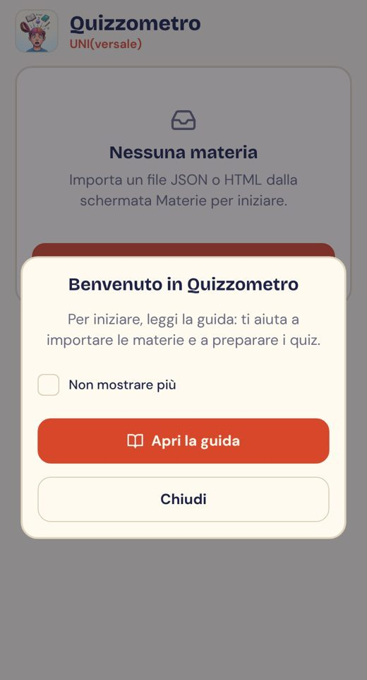
Il benvenuto
1.4 Aggiornare l'app
📱 iPhone / web app: non devi scaricare niente. Quando esce una versione nuova compare l'avviso “Aggiornamento disponibile”: tocca Aggiorna ora. Materie e progressi restano.
🤖 App Android: quando compare l'avviso “Aggiornamento disponibile”:
Tocca Scarica aggiornamento. Compare la finestra “Come aggiornare”: tocca Inizia download.
Si apre il browser e il file si scarica da solo.
Tocca la notifica “Download completato” (scorri il dito dall'alto verso il basso per vederla). Se non la trovi: app File → Download → tocca il file che finisce con .apk.
La prima volta Android può chiedere il permesso per il browser: Impostazioni → attiva “Consenti da questa fonte” → torna indietro.
Tocca “Aggiorna” (o “Installa”). Se compare Play Protect con “Questa app sembra sicura”, tocca “Installa”.
Puoi controllare a mano in Altro → Aggiornamenti → Controlla ora. L'app controlla anche da sola ogni volta che la apri.
Parte 2 – Tutte le funzioni
Schermata per schermata.
2.1 Le quattro schede
In basso ci sono sempre quattro schede. Toccale per spostarti:
Scheda
Cosa contiene
☀️ Oggi
La materia attiva, l'eventuale prova in sospeso e i ripassi recenti (Parte 2.6).
▶️ Quiz
Prepara e avvia una nuova prova (Parte 2.3).
📊 Progressi
Riepilogo del tuo percorso e accesso alle statistiche (Parte 2.7).
In tutte le altre schermate, la freccia ← in alto a sinistra riporta indietro.
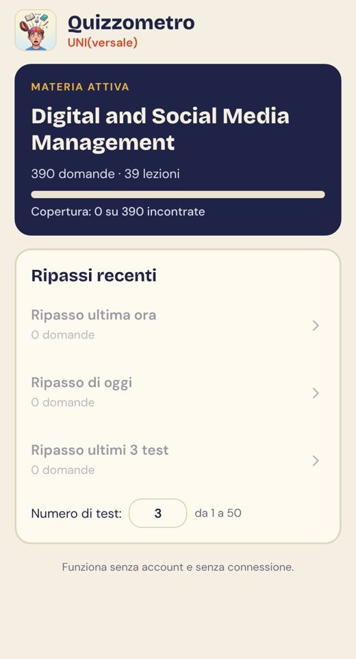
Scheda Oggi
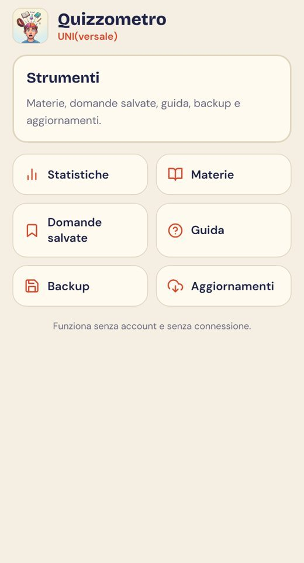
Scheda Altro
2.2 Importare una materia
Le materie arrivano come file che finiscono con .json oppure .html, per esempio su WhatsApp o per email. Prima il file va salvato sul telefono, poi lo apri dall'app.
Passo A – Salvare il file sul telefono
📱 iPhone
🤖 Android
WhatsApp: tocca il file → Condividi ⬆️ → “Salva su File” → “Sul mio iPhone” → “Salva”. Email: tieni premuto sull'allegato → “Salva su File”.
WhatsApp: tocca il file nella chat: si scarica da solo. Email: tocca ⬇️ Scarica sull'allegato: finisce in Download.
Passo B – Importarlo in Quizzometro
Scheda Altro → Materie. Se non hai ancora materie, puoi anche toccare Vai alle Materie nella scheda Oggi.
Nel riquadro “Importa una materia” tocca Scegli file JSON o HTML.
Scegli il file. iPhone: “Sul mio iPhone” o “Recenti”. Android: “Download” oppure WhatsApp → Media → Documenti.
Compare l'Anteprima importazione: nome della materia, numero di domande e lezioni, e quante domande sono Nuove, Identiche, Modificate o Scartate.
Tocca Conferma importazione. La materia diventa quella attiva.
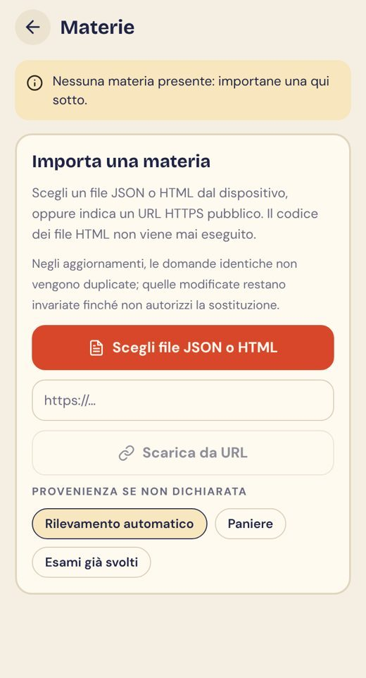
Il pulsante rosso per scegliere il file
Le opzioni dell'anteprima (di solito non servono)
Provenienza se non dichiarata: per i file che non indicano la fonte delle domande. Lascia Rilevamento automatico, oppure scegli Paniere o Esami già svolti.
Materia di destinazione: l'app capisce da sola se il file è una materia nuova o l'aggiornamento di una che hai già. Puoi forzare Crea nuova o sceglierne una.
Domande modificate: se il file contiene domande già presenti ma cambiate, restano come prima finché non attivi l'interruttore che autorizza la sostituzione.
ℹ️ Importare da un link: nel campo https://… puoi incollare un link pubblico a un file JSON o HTML e toccare Scarica da URL. 🤖 Sull'app Android funzionano anche i link Claude. 📱 Nella web app molti link vengono bloccati dal browser: in quel caso scarica il file e usa il pulsante rosso.
2.3 Preparare una prova
Scheda Quiz. Scegli le opzioni toccandole (quella scelta è evidenziata):
Opzione
Cosa fa
Tipo di prova (solo se la materia ha domande Inedite)
Misto: soprattutto domande del paniere, con circa il 15% di Inedite. Solo Inedite: solo le domande inedite.
Quantità
10, 20, 30 domande, Tutte, oppure Altro per scrivere un numero.
Timer
Nessuno, 10, 20, 30 minuti, oppure Altro. Allo scadere la prova si chiude da sola.
Stato delle domande
Tutte, Già viste, Non viste (mai incontrate), Sbagliate (almeno una volta).
Solo domande con date
Interruttore: tiene solo le domande che contengono date o anni. Utile per ripassare le date.
Categorie e lezioni
Apre i filtri: scegli le categorie (Paniere, Inedite…) e le lezioni (L1, L2…). Tutte e Nessuna selezionano o tolgono tutto in un colpo.
Sotto vedi quante domande sono disponibili con i filtri scelti. Poi tocca Avvia prova.
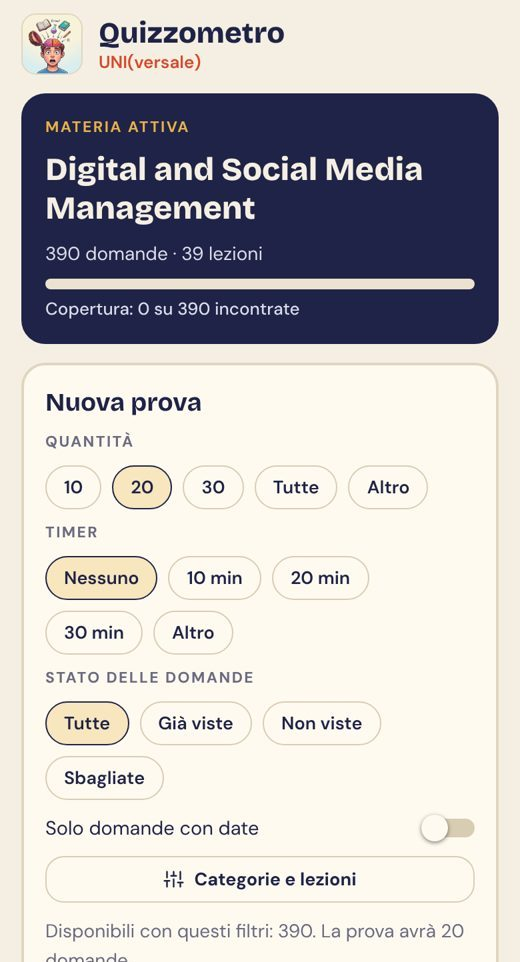
Scheda Quiz
💡 Se il pulsante è spento o dice che non ci sono domande, i filtri sono troppo stretti: scegli Tutte nelle categorie e nelle lezioni.
2.4 Durante la prova
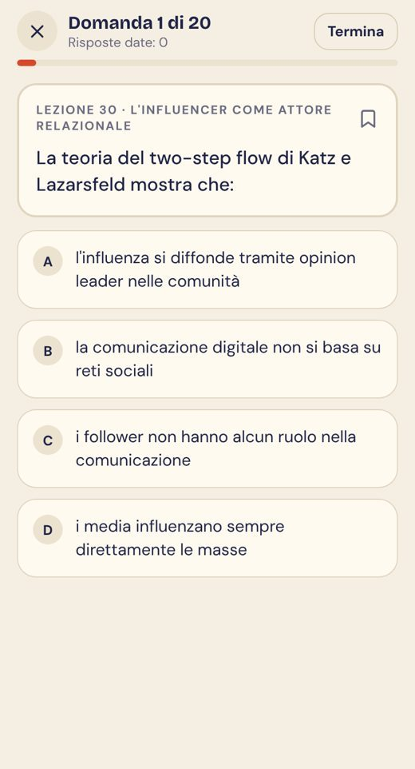
Prima di rispondere
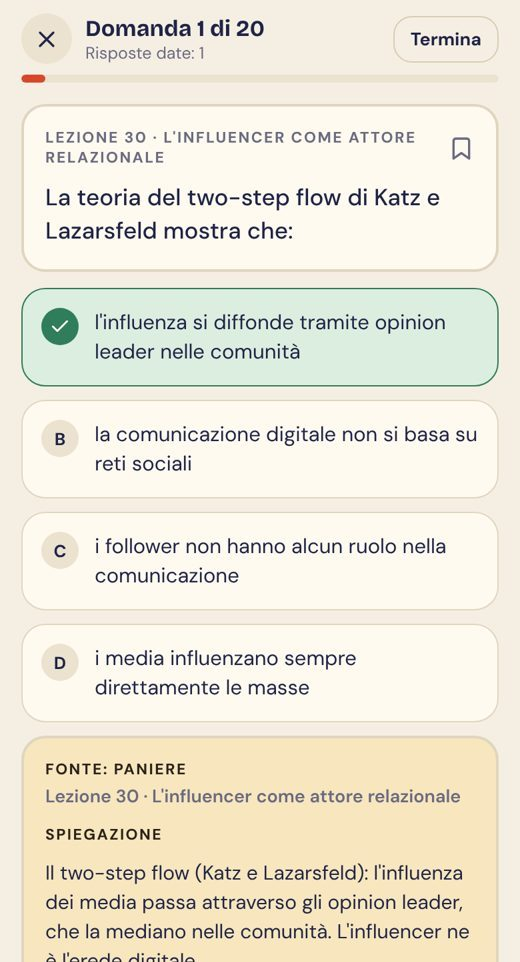
Dopo aver risposto
In alto vedi il numero della domanda (es. “Domanda 1 di 20”), quante risposte hai dato e, se c'è, il tempo rimasto.
Sopra la domanda c'è la lezione da cui viene.
Tocca la risposta che pensi giusta. Subito vedi la risposta giusta in verde ✓ e, se hai sbagliato, la tua in rosso.
Sotto compare un riquadro con la Fonte (Paniere o Inedite), la lezione e la Spiegazione.
Tocca Avanti per andare alla domanda successiva. Prima di rispondere il pulsante si chiama Salta. Con Indietro torni alla precedente.
All'ultima domanda tocca Concludi. Puoi anche chiudere prima con Termina, in alto a destra: le domande senza risposta contano come “non date”.
Segnalibro 🔖 (in alto a destra sulla domanda): salva la domanda per ripassarla dopo (Parte 2.11).
X in alto a sinistra: esci dalla prova. La prova resta in sospeso e puoi riprenderla dalla scheda Oggi.
2.5 Il risultato
A fine prova vedi:
la percentuale di risposte giuste;
quante sono Corrette, Sbagliate, Non date e il Totale.
I pulsanti:
Nuova prova: torna alla Home.
Ripeti errori: una nuova prova solo con le domande sbagliate o non date.
Ripeti tutto: rifà la stessa prova. Ordine di domande e risposte cambia.
Sotto c'è la Revisione: per ogni domanda trovi fonte, lezione, la tua risposta, quella giusta e la spiegazione. Con Tutte / Sbagliate / Non date filtri l'elenco. Anche qui c'è il segnalibro 🔖.
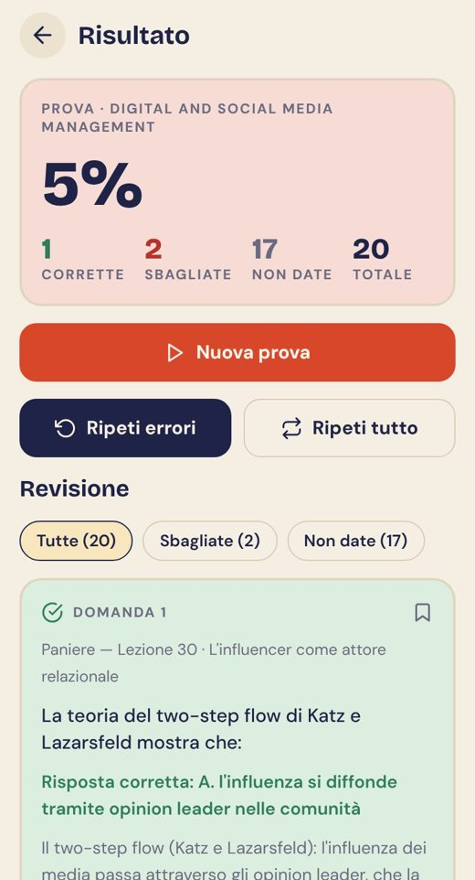
Il resoconto finale
2.6 Oggi: prove in sospeso e ripassi
Materia attiva: la materia che stai studiando, con il numero di domande e la copertura (quante ne hai già incontrate). Cambia materia porta alle Materie.
Prova in sospeso: compare se sei uscito da una prova. Riprendi la continua. Archivia la chiude come “parziale” con le risposte date finora.
Ripassi recenti: rifai al volo le domande delle prove dell'ultima ora, di oggi o degli ultimi N test. Il numero N si sceglie nella casella “Numero di test” (da 1 a 50). Se una riga è grigia con “0 domande”, non ci sono prove in quel periodo.
2.7 Progressi e statistiche
Scheda Progressi → Apri statistiche e progressi, oppure Altro → Statistiche. Riguardano la materia attiva:
Risposte date, Accuratezza (percentuale di giuste), domande Incontrate sul totale, numero di Prove.
Copertura per categoria: quante domande del Paniere, delle Inedite ecc. hai già visto.
Progressi per capitolo: per ogni lezione, quante domande hai affrontato e con che risultato.
Lezioni da rinforzare: quelle dove sbagli di più (servono almeno 2 risposte per lezione).
Domande più difficili: quelle sbagliate più spesso.
Ultime sessioni: le prove recenti con il risultato.
⚠️ In fondo c'è “Azzera i progressi di questa materia”: cancella statistiche e cronologia delle prove della materia. Le domande restano, ma i progressi non si possono recuperare.
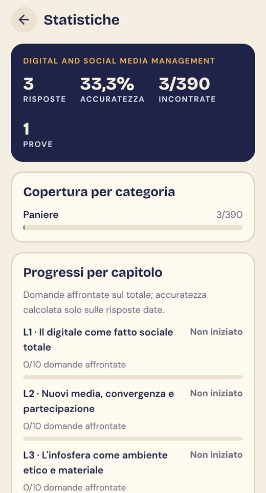
Statistiche
2.8 Gestire le materie
In Altro → Materie, ogni materia ha i suoi pulsanti:
Pulsante
Cosa fa
Seleziona / Materia attiva
Seleziona rende quella materia la materia da studiare. Quella in uso mostra “Materia attiva”.
Aggiorna da file
Aggiunge le domande nuove da un file più recente della stessa materia. Non crea doppioni e conserva i progressi.
Aggiungi domande
Aggiungi domande scritte da te o da un collega (Parte 2.9).
Condividi materia
Crea il file della materia da mandare ai colleghi (Parte 2.10).
Aggiorna dal link
Solo per le materie importate da un link: riscarica la versione più recente.
Elimina
Cancella la materia con i suoi progressi. Chiede conferma.
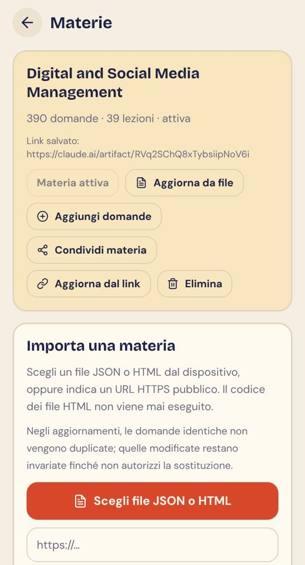
I pulsanti di una materia
2.9 Aggiungere domande
Puoi aggiungere domande nuove a una materia incollando del testo scritto in Word, Note, WhatsApp o dove vuoi. Lo schema usa le stesse voci dei file delle materie.
Lo schema di ogni domanda
LEZIONI: 18
FONTE: inedita
DOMANDA: I decreti di attuazione degli statuti speciali riguardano
CORRETTA: Valle d'Aosta, Trentino-Alto Adige, Friuli-Venezia Giulia, Sicilia, Sardegna
ERRATA: Sicilia, Sardegna, Lombardia, Veneto, Campania
ERRATA: Valle d'Aosta, Piemonte, Liguria, Lazio, Toscana
ERRATA: Trentino-Alto Adige, Abruzzo, Molise, Calabria, Puglia
SPIEGAZIONE: Le norme di attuazione sono adottate con decreto legislativo.
Riga
Cosa scrivere
LEZIONI:
Il numero della lezione. Se riguarda più lezioni: 4, 5.
FONTE:
Solo paniere oppure inedita.
DOMANDA:
Il testo della domanda. Può andare a capo.
CORRETTA:
La risposta giusta. Una sola.
ERRATA:
Una risposta sbagliata per riga. Sempre esattamente 3.
SPIEGAZIONE:
Facoltativa: puoi non metterla.
ℹ️ Tra una domanda e l'altra lascia una riga vuota. Se più domande consecutive hanno la stessa lezione e la stessa fonte, puoi scrivere LEZIONI e FONTE solo nella prima. Maiuscole e minuscole non contano.
Come si fa
Scrivi le domande con lo schema e copiale (tieni premuto → Seleziona tutto → Copia).
In Quizzometro: Altro → Materie → sotto la materia tocca Aggiungi domande.
Tieni premuto nella casella “Incolla qui le domande…” e tocca Incolla.
Tocca Controlla. Compare l'Anteprima: quante domande sono valide e gli errori riga per riga (es. “Riga 10: servono 3 righe ERRATA, ne ho trovate 1”).
Correggi il testo nella casella e tocca di nuovo Controlla. In alternativa puoi aggiungere subito solo le domande valide.
Tocca Aggiungi alla materia. Le domande già presenti sono segnate “Già presente” e non vengono duplicate.
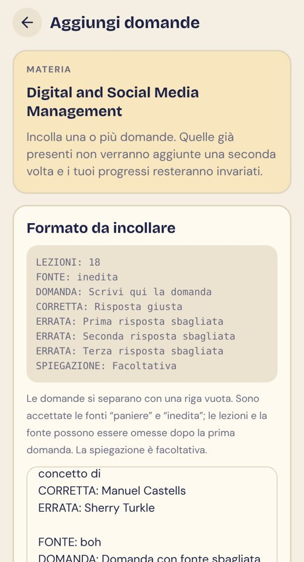
Anteprima con gli errori segnalati
2.10 Condividere una materia con i colleghi
Dopo aver aggiunto le domande compare “Domande aggiunte! Vuoi condividere la materia aggiornata con i colleghi?”. Tocca Condividi. In qualsiasi momento puoi farlo anche da Materie → Condividi materia.
🤖 Android: si apre il menu di condivisione: scegli WhatsApp e il gruppo. 📱 iPhone/web: si apre il menu Condividi (scegli WhatsApp oppure “Salva su File”); su computer il file viene scaricato.
Il file si chiama, per esempio, quiz_Diritto_Pubblico_2026-11-23.json. Contiene solo la materia e le domande: niente progressi né dati personali.
Chi riceve il file
Salva il file sul telefono (Parte 2.2, Passo A).
Altro → Materie → sotto la stessa materia tocca Aggiorna da file e scegli il file. Se non hai ancora quella materia, usa il pulsante rosso Scegli file JSON o HTML.
Controlla l'anteprima e conferma: entrano solo le domande nuove e i tuoi progressi restano.
2.11 Domande salvate
Durante una prova o nella revisione, tocca il segnalibro 🔖 su una domanda. La ritrovi in Altro → Domande salvate, divise per materia. Da lì puoi:
Ripassa: avvia una prova solo con le domande salvate;
togliere una domanda dall'elenco toccando di nuovo il segnalibro.
2.12 Backup e ripristino
Il backup è un file che contiene tutto: materie, domande, domande salvate, progressi, prove e impostazioni. Fallo ogni tanto e sempre prima di cambiare telefono.
🤖 Android
Altro → Backup.
La prima volta tocca Scegli cartella e indica dove salvare (per esempio Download o una cartella nuova “Quizzometro”), poi Usa questa cartella → Consenti.
Tocca Crea backup locale. Il file viene salvato lì; sotto compare l'elenco dei backup trovati.
In alternativa, Condividi una copia JSON ti permette di mandarlo su Drive, email o WhatsApp.
📱 iPhone / web
Altro → Backup → Salva una copia JSON.
Scegli “Salva su File” → iCloud Drive → Salva.
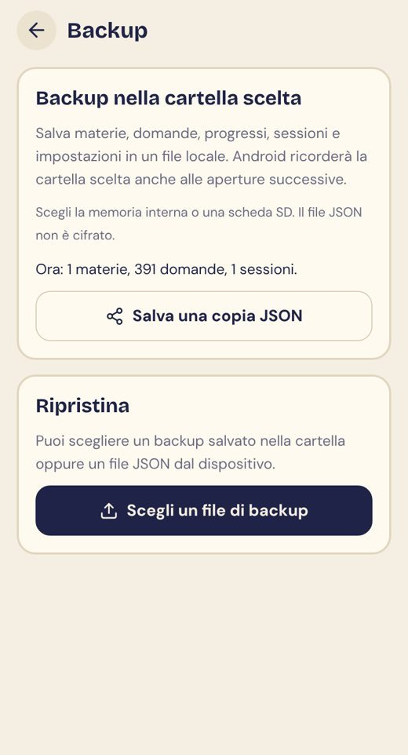
Backup (web app)
Ripristinare un backup
Altro → Backup → Scegli un file di backup. 🤖 Su Android puoi anche toccare Controlla questo backup nell'elenco.
L'app mostra il contenuto del backup: materie, domande, sessioni e date.
Scegli la Modalità di ripristino:
Sostituisci tutto: i dati attuali vengono rimpiazzati dal backup. È la scelta giusta su un telefono nuovo.
Unisci e aggiorna corrispondenti: aggiunge ciò che manca e aggiorna dal backup ciò che c'è in entrambi.
Aggiorna solo corrispondenti: aggiorna solo ciò che esiste già nell'app, senza aggiungere altro.
Conferma. In caso di dubbio, prima fai un backup dei dati attuali.
2.13 Aggiornamenti e Guida
Altro → Aggiornamenti: mostra la versione installata, l'ultimo controllo e lo stato. Controlla ora verifica subito se c'è una versione nuova. Il campo “Repository delle release” non va toccato.
Altro → Guida: Apri la guida completa (PDF) apre questa guida (serve internet). Sotto trovi un riassunto che funziona anche offline e lo storico delle novità di ogni versione.
Parte 3 – Se qualcosa non va
Problema
Cosa fare
iPhone: non trovo “Aggiungi alla schermata Home”.
Controlla di essere in Safari. Scorri l'elenco di Condividi fino in fondo; se non c'è, “Modifica azioni” e aggiungila.
Ho aperto l'icona ma le mie materie sono sparite.
Forse prima usavi l'app dentro Safari: i dati sono separati. Importa di nuovo le materie o ripristina un backup. D'ora in poi usa solo l'icona.
Toccando il pulsante rosso non trovo il file.
Il file non è salvato sul telefono: rifai la Parte 2.2, Passo A.
“Il contenuto non è un JSON né un HTML…”
Il file non è una materia di Quizzometro o è danneggiato: fattelo rimandare.
Web app: “Il browser non può leggere questo link”.
Scarica il file e importalo con il pulsante rosso “Scegli file JSON o HTML”.
“Avvia prova” non funziona o ci sono 0 domande.
Filtri troppo stretti: metti Tutte in Stato, Categorie e Lezioni e spegni “Solo domande con date”.
Aggiungi domande: errori in rosso.
Leggi il numero di riga indicato. I casi più comuni: manca CORRETTA, le ERRATA non sono 3, la FONTE non è “paniere” o “inedita”, manca la riga vuota tra due domande.
Aggiungi domande: “Già presente”.
La domanda c'è già nella materia: non viene aggiunta di nuovo. Va bene così.
Android: installando l'APK dice “App non installata”.
Il file è incompleto: riscaricalo. Se continua, disinstalla la vecchia versione (fai prima un backup!) e reinstalla.
Android: avviso rosso di Play Protect.
Tocca “Altri dettagli” → “Installa comunque”. Con le versioni recenti dovrebbe comparire invece “Questa app sembra sicura”.
Android: non trovo il file dell'aggiornamento.
App File (o “I miei file”) → Download: tocca il file .apk più recente.
La web app non si aggiorna.
Chiudi l'app del tutto (scorri verso l'alto e togli la scheda) e riaprila dall'icona.
Schermo bianco o “Qualcosa è andato storto”.
Tocca Riprova o chiudi e riapri l'app. Se continua, scrivi a chi ti ha passato l'app.
“Archivio non leggibile”.
I dati non sono stati toccati: tocca Ripristina da backup. Solo se non hai backup, Ricomincia da zero.
📌 Riassunto veloce
1. Installare: iPhone → Safari → Condividi ⬆️ → “Aggiungi alla schermata Home”. Android → link dell'app → file .apk → Installa.
2. Nuova materia: salva il file → Altro → Materie → pulsante rosso → Conferma importazione.
3. Studiare: scheda Quiz → scegli le opzioni → Avvia prova.
4. Aggiungere domande: Materie → Aggiungi domande → incolla → Controlla → Aggiungi → Condividi.
5. Non perdere i dati: Altro → Backup, ogni tanto.